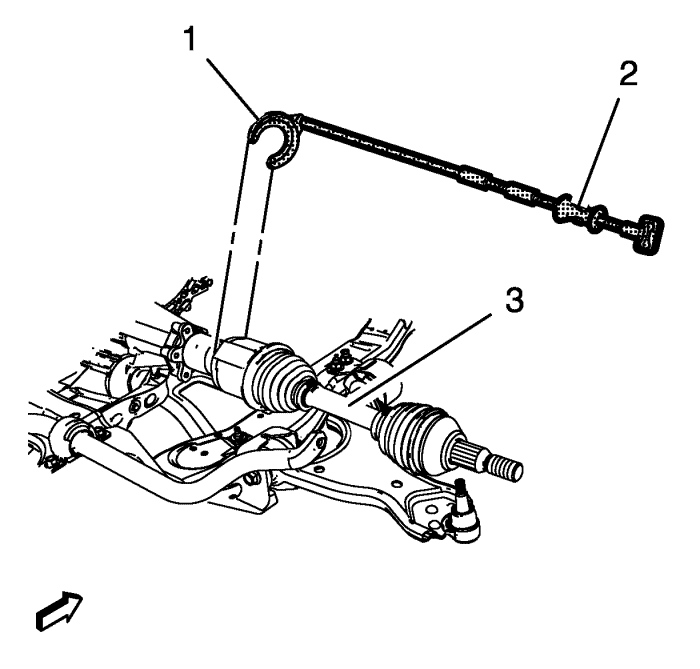
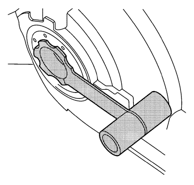
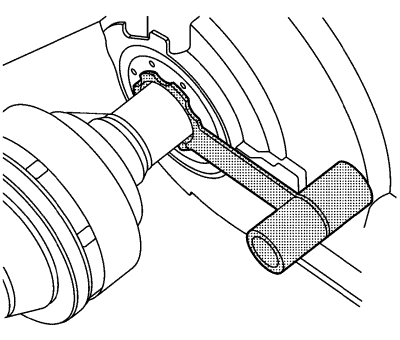
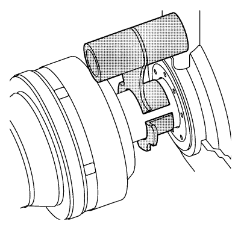

Sustitución del semieje de la rueda delantera - Lado derecho
Herramientas especiales
| • | CH-313 Martillo de percusión |
| • | CH-6003 Extractor de semieje |
| • | CH-49376 Llave de retención |
| • | CH-49400 Extractor de husillo de cubo |
| • | DT-6332 Protector de juntas |
Si desea informarse sobre herramientas regionales equivalentes, consultar Herramientas especiales .
Procedimiento de desmontaje
Advertencia: Para evitar lesiones personales y/o daños en los componentes, no permita que el peso del vehículo descanse sobre las ruedas delanteras ni intente operar el vehículo cuando se hayan extraído la(s) tuerca(s) de árbol de accionamiento de las ruedas o el (los) árbol(es) de accionamiento de las ruedas. Hacerlo puede hacer que se separe la pista interior del cojinete, dañando con ello los componentes de freno y suspensión y provocando la pérdida de control del vehículo.
Atención: Los sellos, las grapas y los fuelles del árbol de accionamiento de las ruedas deben protegerse contra objetos afilados al realizar trabajos en los árboles impulsores de las ruedas o cerca de éstos. Si se dañan fuelles, sellos o grapas, puede producirse una fuga de lubricante de la unión y producir un aumento del ruido y un posible fallo del árbol impulsor de la rueda.
- Elevar el vehículo y soportarlo de manera adecuada. Consultar Elevación y soporte en alto del vehículo .
- Desmonte la rueda del vehículo. Consultar Desmontaje y montaje de la rueda y el neumático .

- Utilizando la llave de retención CH-49376 (1) con la extensión EN-956-1 (2).

Nota: NO reutilice la tuerca del árbol de accionamiento de ruedas. Deseche la tuerca y sustitúyala con una NUEVA.
- Desmonte la tuerca del árbol de accionamiento de ruedas (2) del árbol de accionamiento de ruedas (1)

Atención: Sujete las pinzas de freno con alambre mecánico fuerte o equivalente cuando se separen del montaje y aún esté conectado el tubo flexible de freno hidráulico. Si no se sujetan las pinzas de esta manera, el tubo flexible de freno tendrá que soportar el peso de las pinzas, lo que puede provocar que se dañe el tubo flexible de freno y esto, a su vez, puede provocar una fuga de líquido de frenos.
- Utilizando el extractor CH-49400 (2), separe el rotor de frenos y el conjunto de cojinete/cubo de rueda (1).
- Retire de la mangueta el conjunto de barra de dirección exterior. Consultar Sustitución la barra de acoplamiento exterior del varillaje de la dirección .
- Separar la rótula de la mangueta. Consultar Sustitución del brazo de apoyo inferior .

- Utilizando el martillo de percusión CH-313 (2) con el extractor CH-6003 (1), retire el árbol de accionamiento de las ruedas (3) del vehículo.
Procedimiento de montaje

Nota: el protector DT-6332 no es necesario para vehículos con árbol intermedio.
- Monte el protector DT-6332 en la junta del árbol de salida del diferencial.

Nota: Para impedir fugas de lubricante, tenga cuidado al montar el árbol de accionamiento de ruedas al diferencial. No dañe la junta de aceite. Sustituya la junta de aceite si está cortada, deformada o dañada de cualquier otro modo.
Nota: el protector DT-6332 no es necesario para vehículos con árbol intermedio.
- Monte cuidadosamente el árbol de accionamiento de las ruedas al diferencial hasta que las estrías estén más allá del protector DT-6332.

Nota: el protector DT-6332 no es necesario para vehículos con árbol intermedio.
- Desmonte el protector DT-6332 de la junta del árbol de salida del diferencial.
- Monte el árbol de accionamiento de las ruedas en el diferencial hasta que el anillo de seguridad esté completamente asentado.
- Confirme que el anillo de seguridad del árbol de accionamiento de las ruedas delanteras está bien asentado sujetando la carcasa interior y tirando de ella hacia fuera.
- Monte el árbol de accionamiento de las ruedas delanteras en el conjunto cojinete/cubo de las ruedas delanteras.
- Monte la rótula en la mangueta. Consultar Sustitución del brazo de apoyo inferior .
- Monte en la mangueta el conjunto de barra de dirección exterior. Consultar Sustitución la barra de acoplamiento exterior del varillaje de la dirección .
Precaución:Consulte Precaución con las fijaciones en la sección Prólogo.
- Monte la NUEVA tuerca de árbol de accionamiento de ruedas (2) en el árbol de accionamiento de ruedas (1) apretando en tres pasadas.
- Utilizando la llave de retención CH-49376 (1) con la extensión EN-956-1 (2).
- Utilizando una llave dinamométrica y una base del tamaño adecuado, apriete la tuerca del árbol de accionamiento de ruedas a 150 N·m 111 (lib. pie).
- Suelte la tuerca del árbol de accionamiento de ruedas (2) a 45°.
- Vuelva a apretar la tuerca del árbol de accionamiento de ruedas (2) a 250 N·m (185 lib. pie).
- Monte el conjunto de neumático y llanta. Consultar Desmontaje y montaje de la rueda y el neumático .
- Bajar el vehículo.
- Compruebe el nivel de aceite de la caja de cambios. Consultar Comprobación del nivel y el estado del aceite del cambio .
| © Copyright Chevrolet. Reservados todos los derechos |